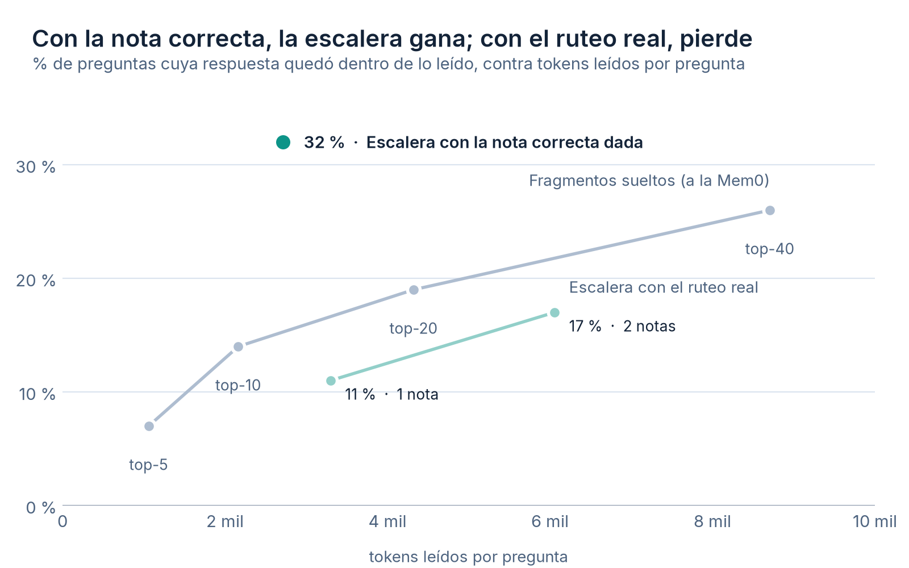
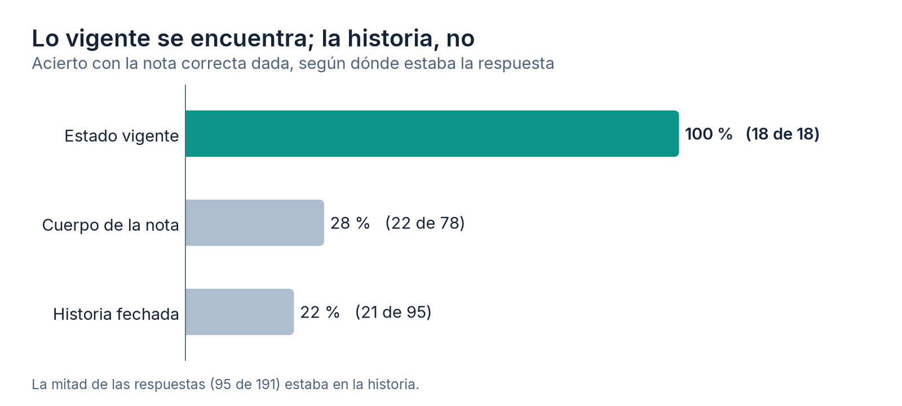

Trabajo con un agente de código que guarda lo que aprende en notas de texto: una por tema, con un estado vigente arriba que se reescribe y una historia fechada abajo que solo crece. Hoy son 220 notas y casi un millón de tokens. Nadie las carga enteras. En cada mensaje un buscador por palabras sugiere cuáles podrían servir, el agente pide un mapa de secciones con el costo de cada una y trae solo la que necesita. A eso le vengo llamando la escalera.
En el artículo anterior la puse al lado de Mem0, Zep, claude-mem y Letta, y concluí que no les faltaba nada. Era una comparación de piezas: esto equivale a aquello. Faltaba la otra, la que hacen sus benchmarks. Dada una pregunta, ¿llega a la vista del agente la línea que la responde, y cuántos tokens costó traerla? Este artículo es esa medición.
Lo corto
- Con la nota correcta en la mano, leer su estado y una sección encontró la respuesta en 32 % de las preguntas con 2,7 mil tokens. Ninguna cantidad de fragmentos sueltos llegó a eso, ni con tres veces el presupuesto.
- El buscador pone primera la nota de la respuesta solo una de cada tres veces. Con ese ruteo, la escalera pierde por poco contra los fragmentos.
- El estado vigente se encuentra siempre; la historia fechada, una de cada cinco. Y la mitad de las respuestas estaba en la historia.
- El 76 % de acierto que publiqué antes medía otra cosa: si se abría alguna nota útil, no si llegaba el dato.
Lo que miden los benchmarks de memoria
LongMemEval, LoCoMo y el benchmark que publica Mem0 no preguntan si el sistema abrió el documento correcto. Preguntan si el dato que responde quedó dentro de lo que se le pasó al modelo, y a cuántos tokens. Son dos números juntos, acierto y costo, porque cargar todo siempre acierta y nunca sirve.
Mi banco anterior medía otra cosa. Por cada mensaje mío, miraba qué notas se habían abierto de verdad para responderlo y si el buscador las había sugerido entre las cuatro primeras. Daba 76 %. Pero abrir una nota no es encontrar la respuesta: la nota puede tener 300 líneas, y si el agente lee el estado y la respuesta estaba en una entrada de hace un mes, la sugerencia fue correcta y el dato no llegó.
Un banco que sale de los transcripts
No quise escribir preguntas a mano, porque uno escribe las que su sistema responde bien. El banco sale de los registros de sesión que Claude Code guarda en el disco. En cada turno se juntan las líneas de memoria que el agente leyó, y una línea cuenta como respuesta si al menos tres de sus palabras poco frecuentes reaparecen en lo que el agente contestó y no venían en mi mensaje ni en los tres anteriores. Lo segundo importa: si la palabra ya estaba en la pregunta, el calce es eco, no recuerdo.
Saqué los turnos en que el agente escribe memoria, porque ahí lo que dice calza con la línea porque él mismo la acaba de redactar. Saqué también el encabezado de cada nota, que ya llega con la sugerencia del buscador. Quedaron 191 pares sobre 70 notas. Revisé a mano una muestra de 15 y unos 12 eran de verdad la respuesta: el método tiene ruido, pero apunta bien.
Después cada línea se busca tal cual en las notas de hoy. Las que ya no existen se descartan, y ese fue el primer dato raro: 372 líneas que fueron respuesta ya no están escritas igual, casi el doble de las que quedan. Las notas se reescriben más rápido de lo que el banco alcanza a estabilizarse. Un banco de memoria hecho a mano, sobre un sistema que se edita todos los días, envejece en semanas.
Cuatro maneras de leer, el mismo presupuesto
Sobre esos pares simulé varias políticas de lectura, todas de una sola pasada sobre las notas actuales:
- La escalera con el ruteo real. El buscador de producción elige una o dos notas, y de cada una se lee el estado vigente y la sección que mejor calza con la pregunta, más el costo del mapa.
- La escalera con la nota correcta dada. Lo mismo, pero se le entrega la nota donde estaba la respuesta. Separa el error de elegir la nota del error de elegir la sección.
- Fragmentos sueltos. Se parten las notas en párrafos (5.159) y se inyectan los 5, 10, 20 o 40 que mejor calzan, sin pasar por notas. Es la forma de Mem0 o de un RAG típico, con una salvedad: uso el mismo buscador por palabras (BM25), no embeddings.
- Todo en contexto. La línea base de LongMemEval: acierta el 100 % a un costo de 977 mil tokens por pregunta.

| Política | Acierto | Tokens por pregunta |
|---|---|---|
| Escalera, nota correcta dada | 32 % | 2,7 mil |
| Fragmentos, los 40 mejores | 26 % | 8,7 mil |
| Fragmentos, los 20 mejores | 19 % | 4,3 mil |
| Escalera con ruteo real, 2 notas | 17 % | 6,1 mil |
| Fragmentos, los 10 mejores | 14 % | 2,2 mil |
| Escalera con ruteo real, 1 nota | 11 % | 3,3 mil |
| Fragmentos, los 5 mejores | 7 % | 1,1 mil |
| Todo en contexto | 100 % | 977 mil |
Las dos mitades están ahí. Con la nota correcta, la escalera es la política más eficiente de la tabla: 32 % con 2,7 mil tokens, contra 26 % de los fragmentos con más del triple. Agrupar lo que se sabe por tema, con lo vigente arriba, funciona. Con el ruteo de verdad, la misma escalera queda debajo de la curva de los fragmentos: 11 % con 3,3 mil, contra 14 % con 2,2 mil.
La estructura de las notas no es el problema. El problema es el paso anterior: elegir cuál abrir. Y ese paso lo había medido con una vara que no veía la diferencia.
Probé dos arreglos obvios. Uno, buscar dentro de la nota por las palabras más raras de la pregunta, que es lo que el agente hace de verdad cuando no le sirve el mapa: dio 10 % y 15 %, sin cambio. El otro, rutear por párrafo y leer después la nota que más puntaje juntó, un híbrido entre los dos mundos: 7 % y 14 %. Ninguno mueve la aguja, porque los dos dependen del mismo buscador.
Por qué el buscador falla justo aquí
El buscador pone la nota de la respuesta en el primer puesto en 32 % de estos pares, y entre las cuatro sugerencias en 53 %. En el banco anterior, sobre todos mis mensajes, daba 76 %. La diferencia está en qué mensajes terminan en un dato. Son los más vagos: «sigue con lo que recomiendes», «¿cómo avanzamos?», «revisa que haya quedado todo bien». No traen con qué buscar. El agente se las arregla igual porque tiene el resto de la conversación y puede pedir otra nota si la primera no sirve, pero cada vuelta es una llamada más, y cada llamada relee el contexto entero.
Eso es lo que esta medición no cuenta. Las políticas simuladas leen una vez y se quedan con lo que trajeron. El agente real, por construcción, llegó a todas estas respuestas: si no, no habrían entrado al banco. Lo que la simulación muestra es cuánto le cuesta llegar, no si llega. Poner en la misma tabla las llamadas que el agente paga para compensar el ruteo es lo que falta.
La historia es la zona débil
Con la nota correcta, la escalera encuentra la respuesta según dónde estaba:

El estado vigente se lee siempre, así que acierta siempre. La historia se lee por sección, y la pregunta casi nunca nombra la fecha ni el episodio: dice «lo de la semana pasada» o no dice nada. LongMemEval tiene una categoría para esto, razonamiento temporal, y es de las que más les cuestan a los sistemas que evalúa. En mis datos la mitad de las respuestas vivía ahí.
Eso cambia cómo pienso la nota. El estado vigente funciona porque es corto y se reescribe: si algo de la historia se pregunta seguido, su lugar es el estado, no una entrada fechada que hay que adivinar. La historia sirve para auditar por qué se decidió algo, no para responder rápido.
Lo que corrijo de la segunda parte
Escribí que el sistema «ya estaba a la par» de los proyectos de memoria y que el ruteo por palabras «ya acertaba 75 %». Lo primero era cierto en diseño y es cierto a medias en resultado: gana con la nota correcta y pierde en la elección. Lo segundo medía si se sugería una nota útil, no si llegaba el dato. Con la vara de los benchmarks, el ruteo acierta la nota primera un tercio de las veces.
No cambio de sistema por esto. Instalar Mem0 o una base vectorial suma texto fijo al inicio de cada sesión, que es lo que más veces se paga, y la ventaja de los fragmentos con el ruteo real es de unos pocos puntos. La lección es más chica y más útil: antes de decir que algo está a la par, medirlo con la misma pregunta que se hacen los otros.
Los límites, para que nadie se lleve las cifras de más
- Léxico contra léxico. Los fragmentos usan BM25, no embeddings, porque no los tengo instalados. Un buscador semántico podría subir la curva de los fragmentos y también el ruteo de la escalera.
- Acierto no es respuesta correcta. Mido si la línea quedó dentro de lo leído, no si el modelo la usó bien.
- Una sola pasada. El agente real compensa con llamadas que aquí no se cobran.
- Calce exacto. Una línea reescrita con otras palabras cuenta como perdida, así que el banco descarta casos que en la práctica sí se responderían.
- Una persona. Son mis notas, mis mensajes y mi forma de preguntar, que es vaga cuando la conversación ya tiene contexto.
El script de este banco no está en el repositorio context-economy, por la misma razón que el del ruteo en la segunda parte: depende de mi lector de notas y no correría en otra máquina. El método sí se puede rehacer con lo que está descrito arriba, sobre los transcripts propios.
Preguntas frecuentes
¿Conviene darle al agente fragmentos sueltos de memoria, al estilo de Mem0, o notas enteras?
En mis datos depende de si se elige bien la nota. Con la nota correcta, leer su estado vigente y la sección que mejor calza encontró la respuesta en 32 % de las preguntas con 2,7 mil tokens; los 40 mejores fragmentos llegaron a 26 % con 8,7 mil. Con el ruteo real, que acierta la nota en el primer puesto solo un tercio de las veces, los fragmentos ganan por poco a igual presupuesto.
¿Cómo se arma un banco de prueba de memoria sin escribir preguntas a mano?
Con los transcripts. En cada turno se toman las líneas de memoria que el agente leyó y se marcan como respuesta las que tienen al menos tres palabras poco frecuentes que reaparecen en lo que el agente contestó y que no venían en la pregunta. Se descartan los turnos donde el agente escribe memoria, porque ahí el calce es con lo que él mismo acaba de redactar.
¿Por qué la historia de las notas es la zona más difícil de encontrar?
Porque la pregunta casi nunca nombra la fecha ni el episodio. Con la nota correcta, el estado vigente se encontró en 18 de 18 casos y la historia fechada en 21 de 95. Es lo que LongMemEval llama razonamiento temporal, y en mis datos la mitad de las respuestas vivía ahí.